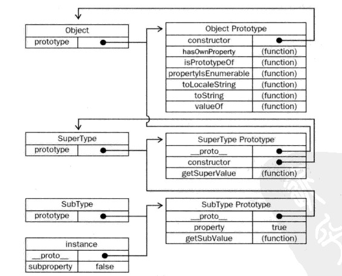

可以用于删除对象的属性
作用：防止内存泄露，特别在ie下。
从图中我们可以看出： 原型继承链、 属性访问

有以下三种定义方式：
所以我们要：变量被初始化之后使用变量
大家答案正确嘛？ 打错了没关系，看了后面的分析就知道答案原因了
现在，我们返回理解下 之前的demo,就变得很简单啦！
有人说闭包就是一个函数！对嘛？ 函数是 JavaScript 中唯一拥有自身作用域的结构，因此闭包的创建依赖于函数
ECMAScript: A "closure" is an expression (typically a function) that can have free variables together with an environment that binds those variables
总结一下：
/
#